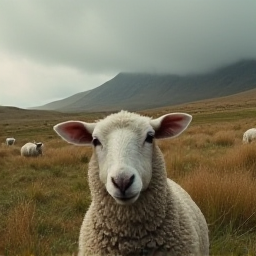

亡羊补牢视频演绎
- A sheep farmer found a hole in the sheep fold,resulting in the loss of a sheep.
- Neighbors advised him to mend the sheepfold,but he did not act,believing that the sheep had been lost.
- The next day,he discovers that two more sheep are missing and realizes that the wolf has entered the sheep fold through the cave.
- Deeply regretful,he finally mended the sheepfold and blocked the cave.
- From then on,the wolf could no longer enter the sheep fold,and his sheep were never lost again.
